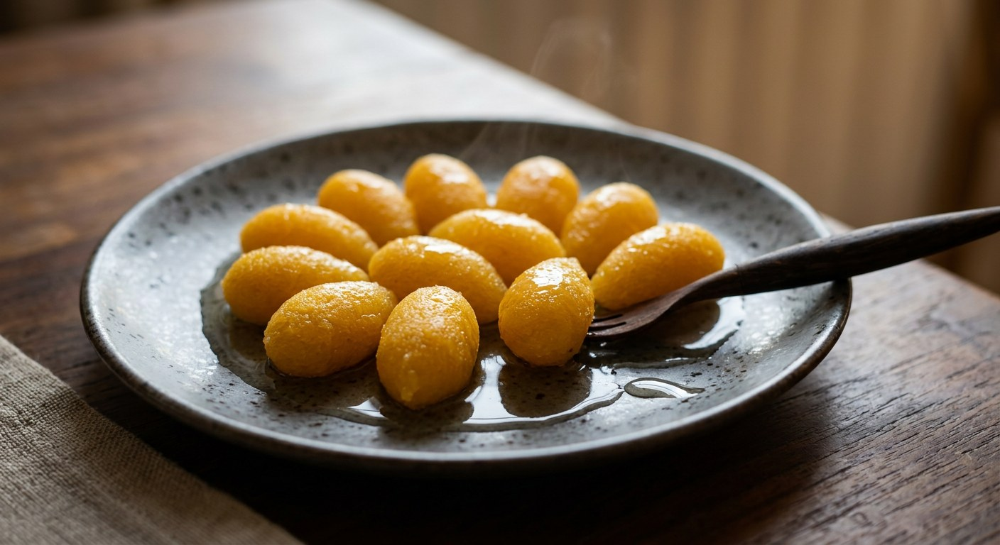

Egg yolks beaten with rice flour and dropped into jasmine syrup as golden teardrops — Thailand's auspicious "gift of gold", shaped not by a mould but by a fiercely boiling pan.

ทองหยอด is the drop-shaped sibling of ทองหยิบ, the pinched gold flower — two of the golden egg-yolk sweets that came to Thailand from Portugal, adapted to local ingredients and served at weddings, house-warmings and merit-making ever since, as Telephoneagar records. The name splits as ทอง, gold, and หยอด, to drip or drop — and Telephoneagar reads the sweet as an offering: giving a golden drop is like gifting precious gold to someone, gold that never runs out. Wongnai calls it an auspicious sweet of wealth, prosperity and fortune, the one that "appears at every merit-making".
The batter is duck yolks, beaten fluffy and cut with a little rice flour — the flour is what lets the yolk hold a teardrop instead of spreading into thong yip's disc; ครัวป้ามารายห์ on Kapook adds it "just until the batter holds a drop". And then comes the part no mould can do. The drops are flicked into a syrup kept at a fierce, frothy boil, because — as KRUA.CO's cook อบเฉย puts it — the froth itself props the batter into shape. Cooked until translucent with no white core, the drops are lifted out and soaked in a thin syrup that keeps the sweetness civil.
The craft details are exacting. KRUA.CO insists on fresh eggs — "old eggs will not whip" — and warns against over-mixing, which turns the batter tough. Kapook's cook flicks the batter in with thumb, index and middle finger; KRUA.CO scrapes it off the cup rim so each piece leaves with a tail. And the flour itself is traditionally smoked over a candle (อบควันเทียน) — half an hour in Wongnai's recipe, overnight in ครัวป้ามารายห์'s — the step commercial thong-yod flour was invented to skip.
| Thai | English | Amount |
|---|---|---|
| ไข่แดงไข่เป็ด | Duck egg yolks | 10 |
| แป้งข้าวเจ้า | Rice flour | 5 tbsp (40 g) |
| แป้งมัน | Tapioca starch | 1 tbsp (8 g) |
| ควันเทียน | Candle, for smoke | 1 |
| น้ำตาลทรายขาว | White sugar — thin syrup | 500 g |
| น้ำเปล่า | Water — thin syrup | 700 g |
| น้ำกลิ่นมะลิ | Jasmine water — thin syrup | 1/8 tsp |
| น้ำตาลทรายขาว | White sugar — thick syrup | 1,000 g |
| น้ำเปล่า | Water — thick syrup | 1,000 g |
| น้ำกลิ่นมะลิ | Jasmine water — thick syrup | 1/8 tsp |
The small brass-pan batch (Kapook): 9 duck yolks, ½ cup thong yod flour (or rice flour), 2½ cups sugar, 2½ cups jasmine water (optional) — one syrup, boiled hard and simmered 10–15 minutes, a portion ladled aside for soaking, and the drops flicked into the boiling remainder. The tailed-drop batch (Aroifin): 9 duck yolks plus 3 chicken yolks and 30 g thong yod flour; thin syrup of 500 g sugar in 800 g water, thick syrup of 740 g sugar in 400 g water — the recipe whose title promises "small drops with pretty tails". The no-measure auntie (ครัวป้ามารายห์): flour by eye — 2–3 tbsp, enough to hold a drop — and a cooking syrup already used for a batch of thong yip or foi thong, because reused syrup boils frothier and froth is what keeps the drops round.
The flour. Wongnai smoke-blends rice flour with tapioca starch for 30–60 minutes; ครัวป้ามารายห์ candle-smokes pure rice flour overnight; Kapook's recipe and Aroifin simply buy แป้งทองหยอด, the ready-made thong yod flour, and neither mentions smoke. The candle-smoke aroma is the traditional signature — the premix is the shortcut.
How much flour. Wongnai measures precisely: 40 g rice flour and 8 g tapioca per 10 yolks. ครัวป้ามารายห์ gives no measure — "2–3 tablespoons, just until it holds a drop". Kapook uses ½ cup for 9 yolks; Aroifin 30 g for 12. Every school converges on the same test: the batter must drop, not spread.
Duck, chicken, or both. Wongnai and ครัวป้ามารายห์ use duck yolks only (Wongnai allows mixing chicken in to soften the result). Aroifin mixes 9 duck with 3 chicken from the start. Kapook's batch is all duck.
The boil. KRUA.CO and Kapook's recipe drop the batter into a syrup at a fierce, rolling, frothy boil — KRUA.CO says the froth is what props the drops into shape. Wongnai's two-syrup method says nothing about boiling hard; its syrup discipline is the opposite — no stirring, never above 114°C. Both can be true: the syrup can froth at a simmer.
The tail. Aroifin's entire pitch is เม็ดเล็กหางสวย — small drops with pretty tails. KRUA.CO accepts both: round or with a tail "like a water drop". Wongnai's title promises ลูกกลม, round balls. The drop-shape school flick-motions the batter off a cup rim; the round-ball school pinches it off with three fingers.
The jasmine. Wongnai and Aroifin scent both syrups with jasmine essence; ครัวป้ามารายห์ and Kapook's recipe use น้ำลอยดอกมะลิ, real jasmine-steeped water (Kapook lists it as optional, the "less sweet" concession). Telephoneagar adds a knotted pandan leaf to the syrup instead — the only source that does.
The water trick. KRUA.CO alone adds about ¼ cup of water mid-cook: it stops the boil, thins the syrup, and as the froth collapses you can see the drops to judge the white core. No other source uses it.
This recipe is translated from the following Thai-language sources. Where they disagree, we've said so.
1. Wongnai — "แจกสูตรฟรี 'ทองหยอด' เมนูขนมไทยมงคลลูกกลมสีเหลืองทอง หวานมันฉ่ำปาก!" by น้องหลุมดำ (the recipe used here) — wongnai.com
2. KRUA.CO — "ทองหยอด" สูตรอาหารโดย อบเฉย อิ่มสบาย (the froth rule, the white-core check and the water trick) — krua.co
3. Kapook — "ทองหยอด วิธีทำขนมไทยโบราณสีสวย สูตรหวานน้อยอร่อยเพลิน" (the thumb-flick drop and the less-sweet batch) — cooking.kapook.com
4. Kapook — "ทองหยิบ ทองหยอด ขนมไทยอร่อยหวานสีสวย ทำไม่ยากมือใหม่ทำได้" สูตรจาก ครัวป้ามารายห์ (the reused-syrup froth rule and the overnight smoke) — cooking.kapook.com
5. Aroifin — "วิธีทำ ทองหยอด เม็ดเล็กหางสวย หวานฉ่ำกำลังดี" โดย thanyachanok (the tailed-drop batch with mixed yolks) — aroifin.com
6. Telephoneagar — "ทองหยิบ-ทองหยอด ขนมโบราณสุดอร่อยสัญชาติโปรตุเกส" (the Portuguese history and the gifting-gold meaning) — telephoneagar.com